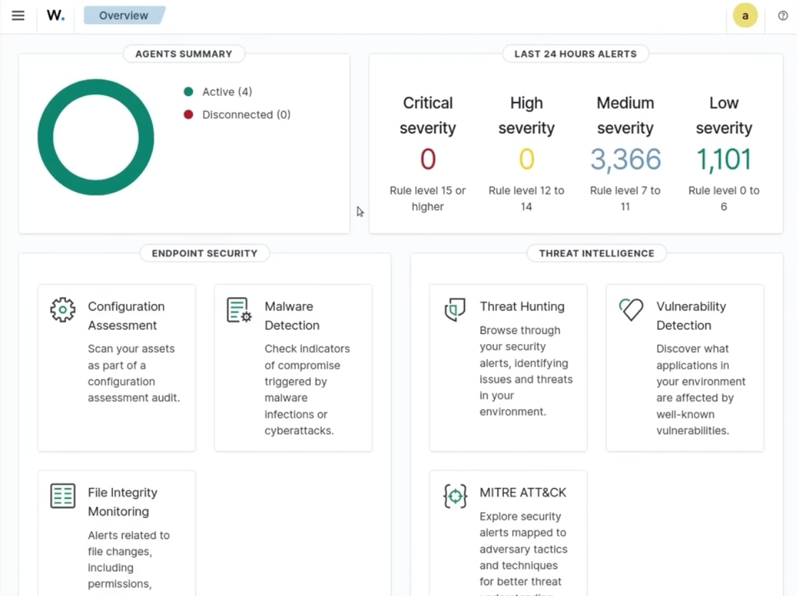
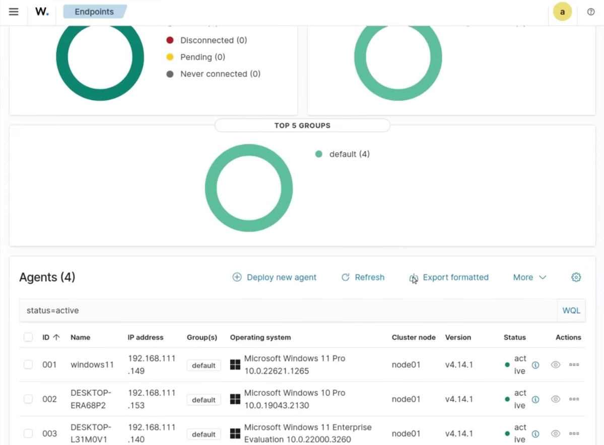
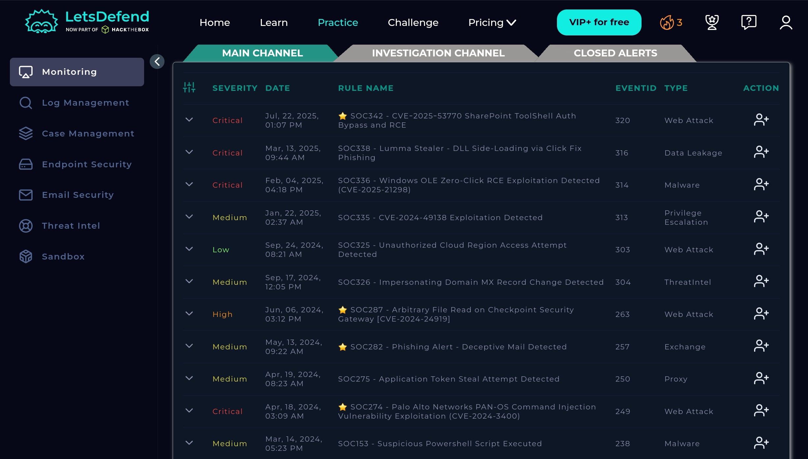
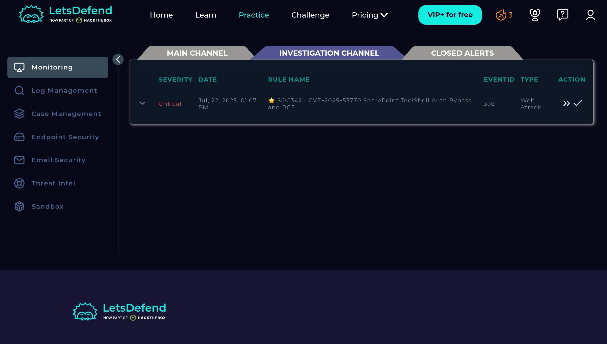
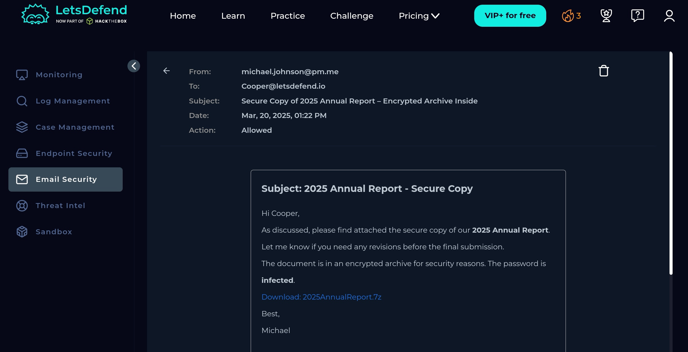

Self-taught in security ops — I build my own lab, break it, log what happened, and fix the detection. Based in Durban, open to relocating. Comfortable with rotating shifts, including nights and weekends.
Personal lab, deployed in a VM · not part of the soc-lab repo above
Running an active SIEM home lab built on Wazuh, used for log collection, alerting, and ongoing detection engineering practice.

Wazuh dashboard overview — agent status, alert severity breakdown, and available detection modules

Wazuh endpoints view — agents deployed and reporting across the lab
Live SOC Monitoring — LetsDefend
HackTheBox (LetsDefend) SOC analyst learning path
Monitored real-time security alerts, performed triage, and investigated incidents in a simulated SOC environment.
Investigated a phishing email in the Email Security module — read headers and body content, identified a password-protected malicious archive lure, and confirmed the block action.

LetsDefend main channel — live alert queue, triaged by severity

Investigating a critical SharePoint ToolShell (CVE-2025-53770) auth bypass and RCE alert

Phishing email investigation — identifying a malicious password-protected archive lure
cat certifications.log
$ certifications
ISC2 Certified in Cybersecurity (CC) — Candidate ID 3986078scheduled 27/08
ISC2 Webinar (CPE) — Securing SaaS at Scalejul 2026